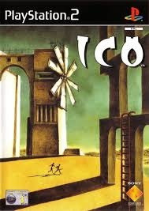

Sinopse
ICO é um jogo de ação-aventura e plataforma desenvolvido pela Team Ico e publicado pela Sony Computer Entertainment. O jogo segue ICO, um jovem com chifres, que é preso em um castelo misterioso. Sua missão é escapar e, durante sua jornada, ele encontra Yorda, uma princesa que precisa de sua ajuda para escapar também.
Com um estilo minimalista, ICO é amplamente reconhecido por sua atmosfera única, jogabilidade centrada na colaboração entre os personagens e pela maneira como conta sua história sem diálogos extensivos. O jogo é conhecido por seu design artístico e pela inovação na época de seu lançamento.
Características Principais
- Atmosfera única e minimalista, com foco na exploração e resolução de puzzles
- Jogabilidade cooperativa com interação entre os personagens ICO e Yorda
- Design artístico e trilha sonora envolvente
- Ambientes detalhados e belos gráficos para a época
- Narrativa simples, mas emocionante, com foco na emoção e no vínculo entre os personagens
- Desafios de plataforma e combate moderado
Imagens Adicionais